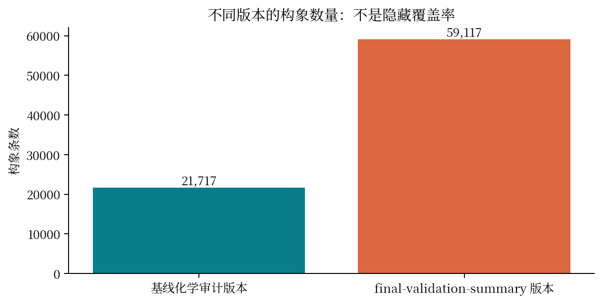
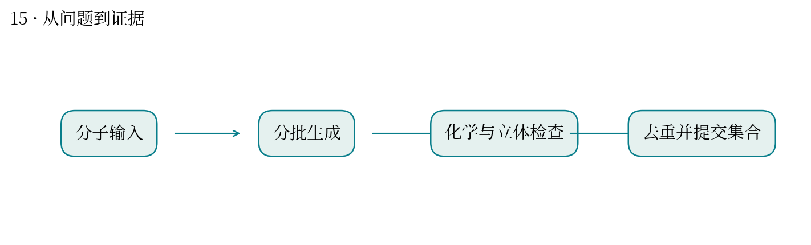
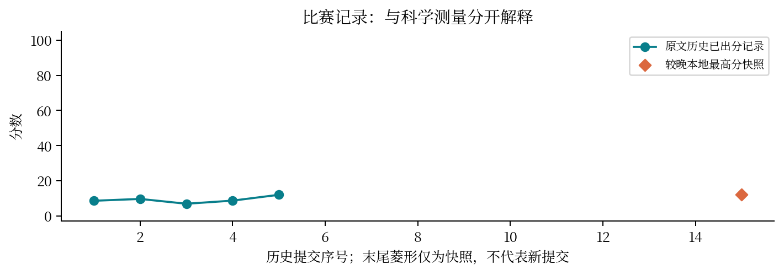

现实中想解决什么：大环分子可能怎样折叠，后续对接应该从哪些形状开始？
从计算到应用：合法且多样的三维构象 → 覆盖可能姿态 → 支持后续对接与性质计算。
这次实际做到哪一步：本题生成并审计构象，检查化学合法性；数量多不等于覆盖了真正重要的构象。
还缺什么：需要覆盖率、能量、溶剂与环境条件验证；生成构象不能直接推断结合能力或药效。
同一个环状分子，可以折成多少种合理的三维形状？
最高分快照：12.01 · 2026-10-12T01:11:24+08:00
大环的闭合约束使构象采样困难。化学有效只说明没有明显几何或立体化学错误，覆盖隐藏实验构象则是另一项要求。
采用 ETKDG 小批独立种子采样、及时保存和化学检查；后续进行环闭合及多样性迭代。
版本需分开：基线化学审计记录 21717 条、零失败；final-validation-summary 记录 59117 条且明确未评估隐藏覆盖。旧总结另记 167227 条，不能当作同一版本。较晚成绩快照为 12.01。
整批超时会丢失已计算部分；能量最低不保证实验构象最近；重复构象可能占满每分子 2000 条评测额度。
类似基因组组装：碱基层面通过质控与覆盖真实结构是两回事。多条近乎相同的候选不能替代结构多样性。
隐藏实验构象未公开，无法独立复算真实覆盖率。有效率、代理多样性、隐藏覆盖率要分别报告。



| attempt | 提交时间 | 分数 | 状态 |
|---|---|---|---|
| 52087 | 10-11 00:59:06 | 8.61106 | 已出分 |
| 52719 | 10-11 03:52:22 | 9.65405 | 已出分 |
| 52956 | 10-11 05:40:03 | 6.9173 | 已出分 |
| 53143 | 10-11 08:03:28 | 8.69326 | 已出分 |
| 53757 | 10-11 11:11:19 | 12.0108 | 已出分 |
| 54033 | 10-11 12:46:09 | — | 失败 |
| 54035 | 10-11 12:47:11 | — | 排队中 |
| 54145 | 10-11 13:35:33 | — | 失败 |
| 54715 | 10-11 16:37:37 | — | 失败 |
| 54828 | 10-11 17:13:01 | — | 失败 |
| 54909 | 10-11 17:26:52 | — | 排队中 |
| 55190 | 10-11 18:25:58 | — | 失败 |
| 55240 | 10-11 18:34:04 | — | 排队中 |
| 55638 | 10-11 19:30:03 | — | 失败 |
源文件 SHA256 见 证据清单；用 scripts/build.py 重建图表。